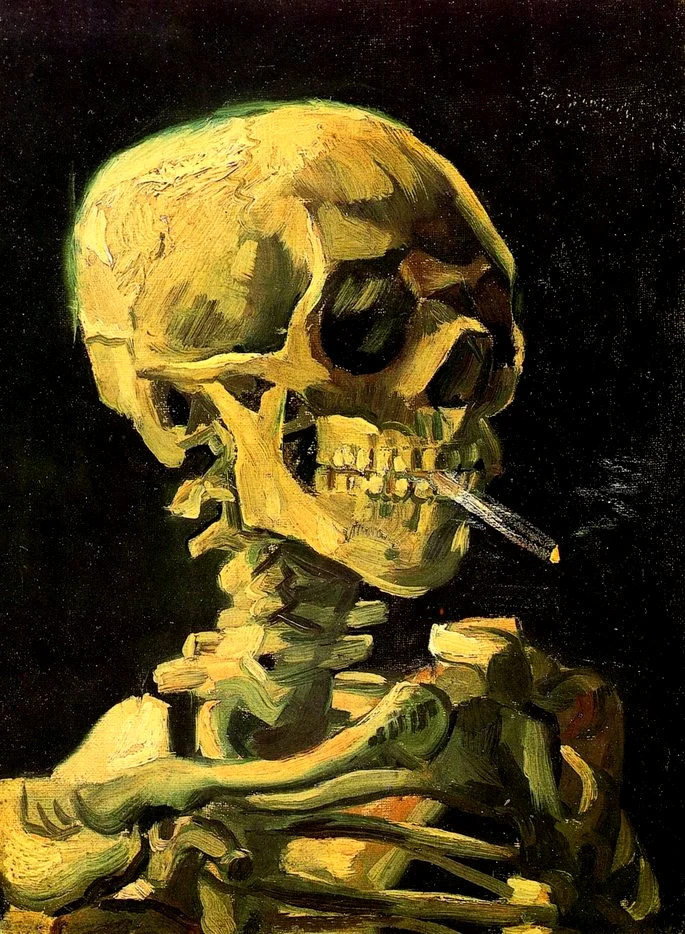
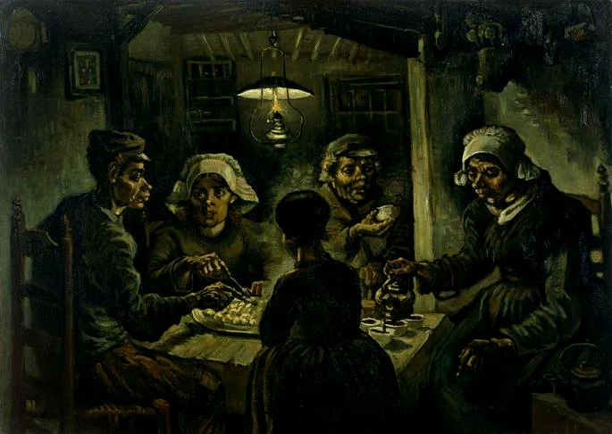

Um tributo a
Vicent Van Gogh
1853 - 1890
Biografia de Vicent Van Gogh
Vincent Willem van Gogh nasceu em Zundert, na Holanda, no dia 30 de março de 1853. Filho do pastor Theodorus van Gogh e de Ana Cornelius Carbentus, Van Gogh era o primeiro filho de seis irmãos. Desde pequeno teve uma vida difícil, marcada pela pobreza, miséria e doenças. O seu irmão mais novo, Theo, foi uma figura primordial na vida de Van Gogh, uma vez que o ajudou e esteve ao seu lado durante grande parte da vida.
Juventude de Van Gogh
Vincent iniciou os estudos de maneira desarmônica, em diversas instituições. Foi um estudante regular e adquiriu o hábito da leitura, que o auxiliou no conhecimento informal durante toda a vida. Com 15 anos abandonou os estudos e no ano seguinte passa a trabalhar com um comerciante de artes, em Haia, na Holanda, por indicação de seu tio. Poucos anos depois tenta a vida em Londres e, mais tarde, em Paris. Estudou Teologia em Amsterdam e aproximou-se com intensidade dos assuntos religiosos.
Os estudos em artes e os amores de Van Gogh
Em 1880 começa a empenhar-se nos estudos artísticos, frequentando a Escola de Belas-Artes. No período, foi influenciado pela pintura realista de Jean-Francois Millet. Posteriormente, continua seus estudos em Etten, quando volta à casa do pai. Nesse momento de sua vida, apaixona-se por sua prima Kee Vos Stricker, mas é rejeitado e abala-se profundamente. Depois vai para a cidade de Haia, onde mostra seus trabalhos para comerciantes do ramo das artes e passa a pintar com tinta a óleo. Mais tarde, conhece Clasina Maria Hoornik, uma ex-prostituta conhecida como Sien. Van Gogh envolve-se com ela, que possuía um filho e estava grávida. Vincent acolhe a moça e seu filho no ateliê, mas depois do nascimento da criança, Sien abandona o pintor. A partir de então, Van Gogh não terá mais envolvimentos amorosos significativos até o fim da vida.
Van Gogh é responsável por pinturas muito conceituadas
A noite estrelada

Caveira com cigarro
Os comedores de batata
Falecimento de Van Gogh
Acometido pela depressão, Van Gogh é internado diversas vezes no hospital de Arles. Em maio de 1889, se interna voluntariamente no hospital psiquiátrico Saint-Paul-de-Mausole, na região de Provença, onde permanece por um ano. Mesmo no hospital, não deixou de pintar, atividade que o ajudava a sobreviver diante de tanto sofrimento. Quando sai do hospital, Vincent vai a Paris visitar Theo. Lá, passa três dias, conhece o sobrinho pequeno e encontra-se com os amigos artistas Pissarro, Toulouse-Lautrec e Tanguy. Em maio de 1890 vai à cidade de Auvers-sur-Oise, próxima de Paris. Lá faz amizade com Dr. Gachet, médico e amante das artes, o qual retrata em uma tela. No local, realiza também outras pinturas do povoado e arreadores.
Em 27 de Julho de 1890, falece em circunstâncias duvidosas. A história recorrente é de que Van Gogh teria atirado contra si. Entretanto, há também a hipótese de que ele tenha sido baleado por alguns meninos da região. O fato pode ter realmente ocorrido, já que a arma nunca foi encontrada. Em todo caso, Vincent nunca acusou ninguém e morre dois dias depois nos braços do irmão e grande amigo, Theo. O pintor tinha apenas 37 anos.